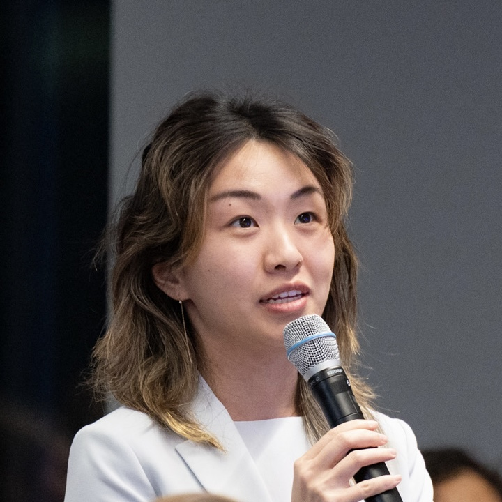

Contact: [firstlast] [at] alumni [dot] stanford [dot] edu

I hold a Bachelor's as well as a Master's degree in Computer Science which I completed coterminally at Stanford, along with a minor in Mathematics.
Since 2020, I've been a quantitative researcher at [current-employer]. Previously at D. E. Shaw Research, Schrödinger, Stanford's Pande Lab, Shi Lab at NIDA, Amaro Lab at UCSD.